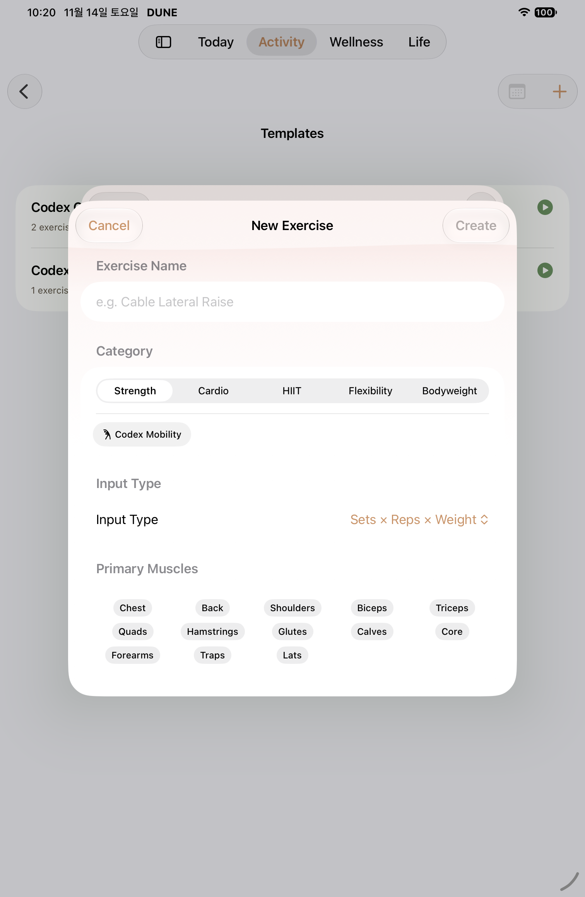
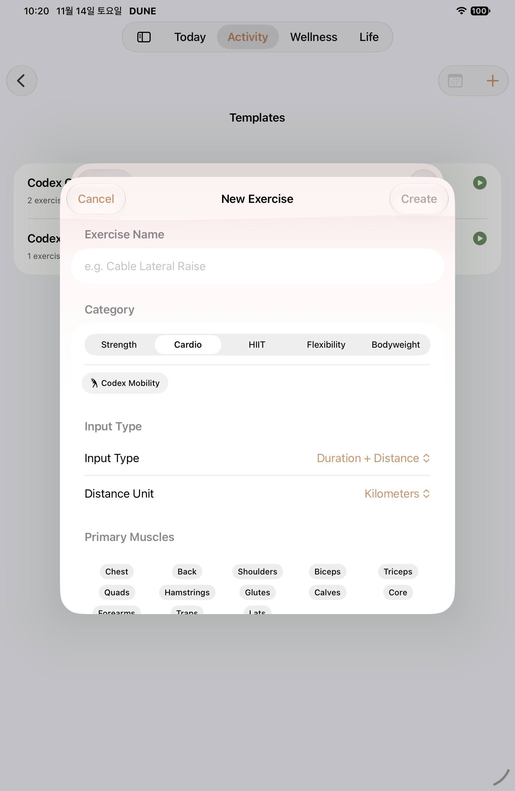
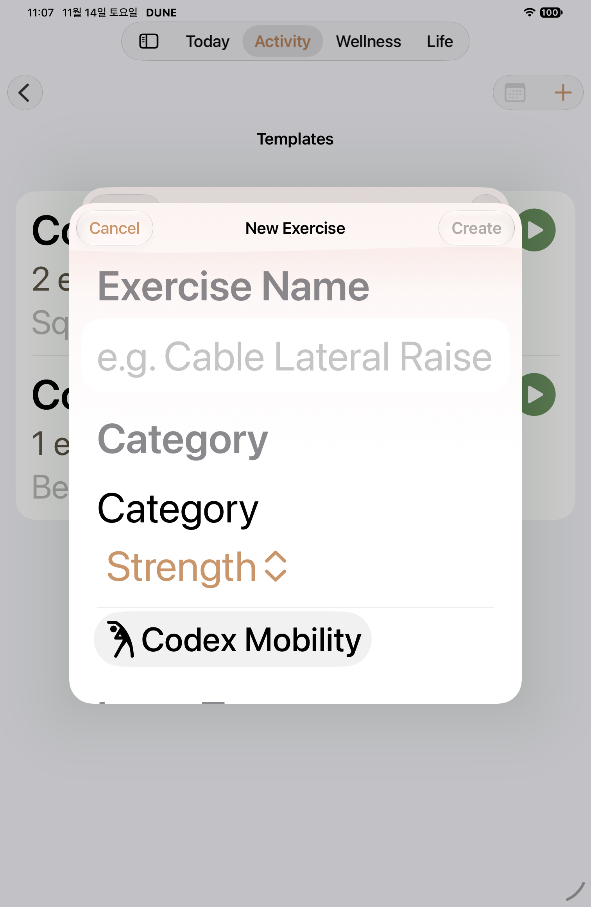
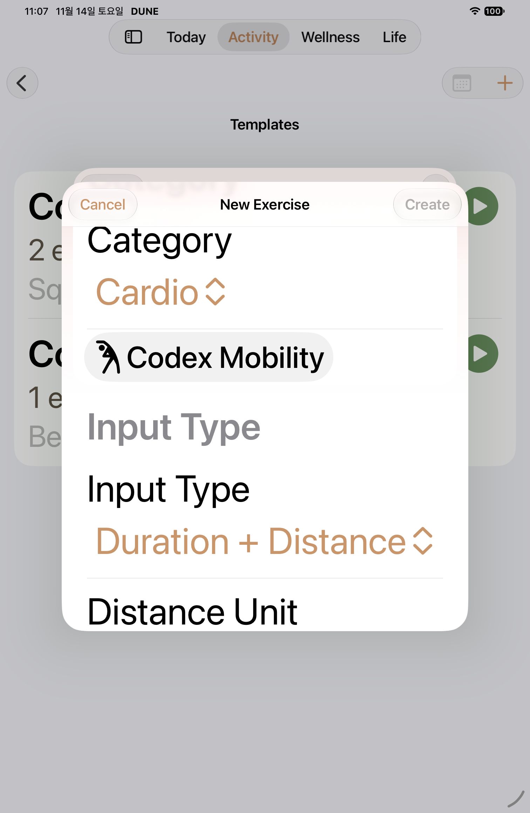

W04 · 2026-11-14 native
Hash manifest
·
Scope

iPad · W04 normal custom exercise form ·
AX

iPad · W04 normal Cardio category readback ·
AX

iPad · W04 MAX custom exercise form ·
AX

iPad · W04 MAX Cardio category readback ·
AX